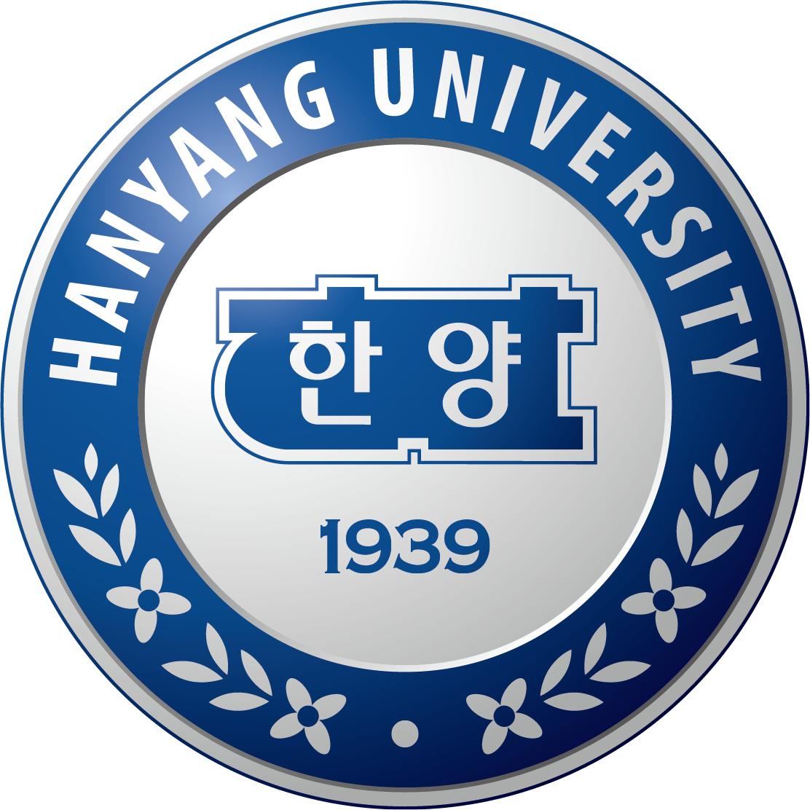
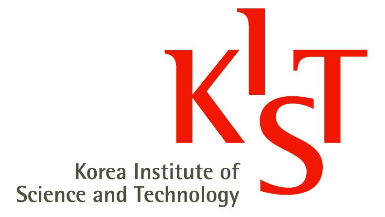
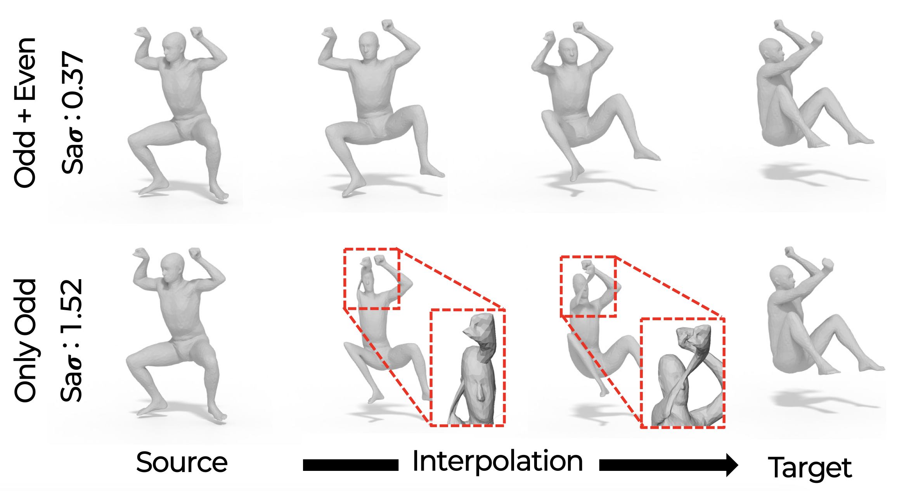
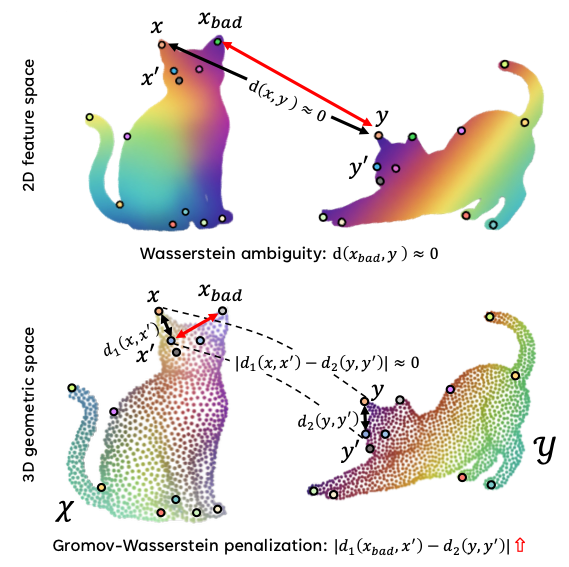

About
I am a Research Assistant at the Spatial AI Lab, Hanyang University, advised by Prof. Je Hyeong Hong.
My research interests center on understanding the dynamic 3D world. I am interested in how visual systems can go beyond a static snapshot and reason about the structure of a scene over time. In particular, I want to study representations that connect observations across time and capture meaningful changes in the underlying 3D world.
Looking forward, I hope to explore 4D scene understanding as a step toward visual systems that can build a coherent understanding of the physical world from what they observe.
I will be attending NeurIPS 2026. If you would like to chat about research, feel free to reach out. I would be happy to grab a coffee! ☕
Education & Experience

Hanyang University Mar. 2026 - Present
Research Assistant (Advisor: Je Hyeong Hong)
Hanyang University Mar. 2024 - Feb. 2026
M.S. in Electronic Engineering (Advisor: Je Hyeong Hong)
Hanyang University Mar. 2020 - Feb. 2024
B.S. in Electronic Engineering, Summa Cum Laude

Intelligent Robotics Research Center, KIST Jun. 2022 - Aug. 2022
Undergraduate Researcher
Worked under the supervision of Dr. Yoonseob Lim
Publications

Chebyshev Differential Flows for Shape Matching and Interpolation
NeurIPS 2026

Academic Service
Reviewer: NeurIPS 2026; 3DV 2026, 2027
External Reviewer: CVPR 2024, 2025; ICCV 2025; ICASSP 2025;
AAAI 2024; BMVC 2024; ICIP 2023
Outside Research
Outside the lab, I enjoy watching baseball ⚾ both on TV and at the ballpark. I'm a KIA Tigers fan 🐯. I also love going to concerts and live performances 🎸.